File 01 · Mumbai · 2026
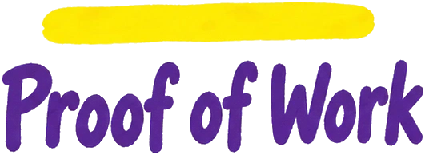
Project files from the desk of
Hemangi Ganatra
Packaging · Identity · Advertising · Copy
This folder belongs to Hemangi Ganatra
If found, please return to the designer.
Reward: one iced coffee.
About
1Fig. 1 — The designer
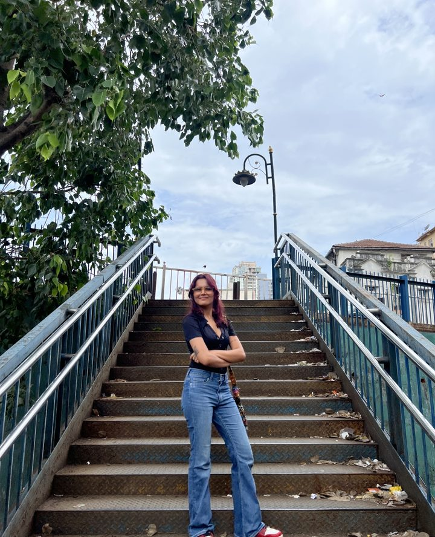
Hemangi Ganatra. Mumbai, 2026. Graphic designer, packaging nerd, judge of labels. Pictured here probably holding coffee.
2A note from the designer
Hi. I'm Hemangi.
I'm a graphic designer who somehow ended up with feelings all over her work, and honestly? Not complaining.
This is my project folder. Most of what's in it started with something I've lived, felt, or found deeply annoying. I figured out I was serious about packaging during an internship: something about holding a thing you made with your hands and thinking, yeah, that's it.
I work where design meets writing: packaging, brand identity, advertising and copy. Sometimes all four in one project, which is chaotic and also my favourite.
Junior Graphic Designer at SMDB. Studying Visual Communication at Ecole Intuit Lab, Mumbai.
— Hemangi
3Contents
- About
- Fig. 1, in the pocketp.2
- A note from the designerp.3
- Projects
- Wear Your Stagep.6
- Oak & Awep.10
- Other
- Still on the deskp.14
- Say hip.16
Projects
5Project 04 · UNIQLO UT × Tour de France
Wear Your Stage.
A tee for every rider's real moment.
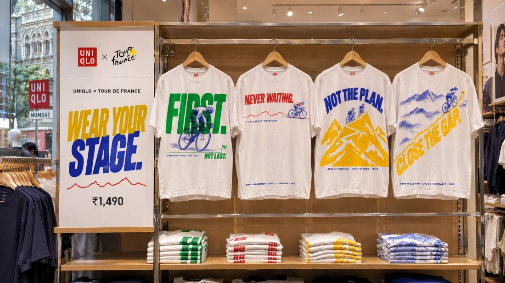
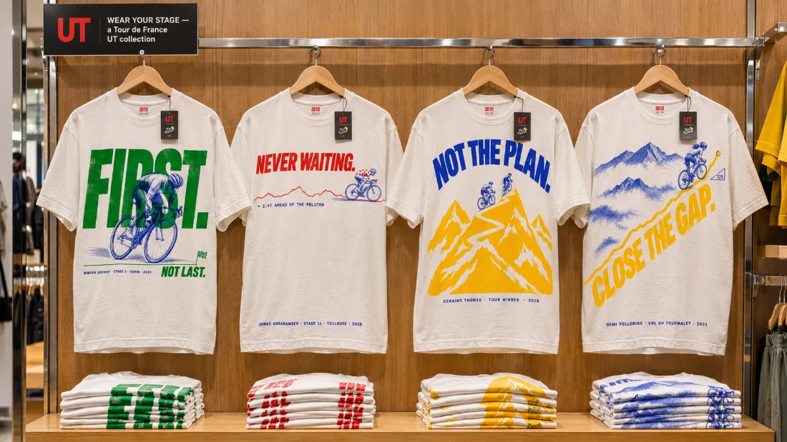
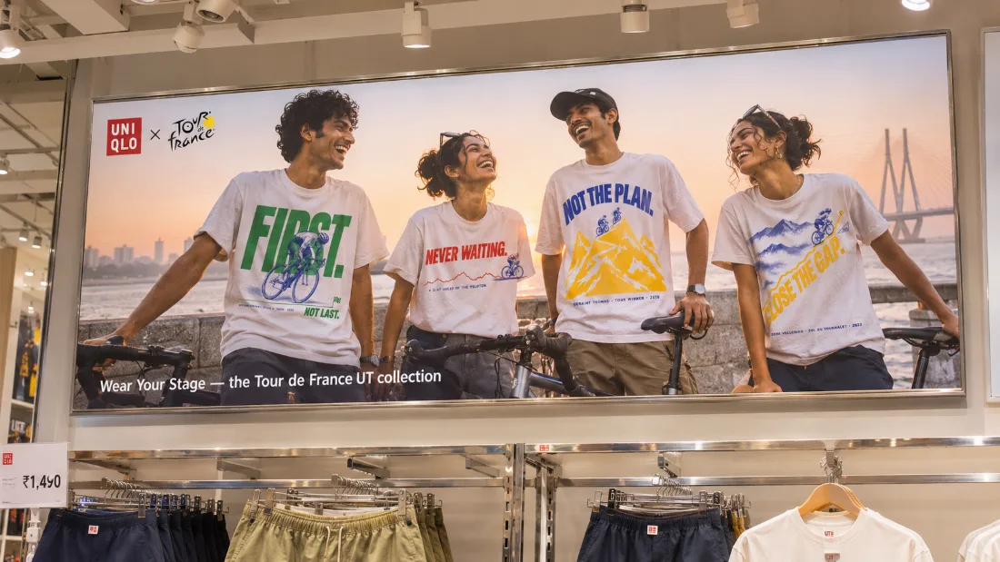
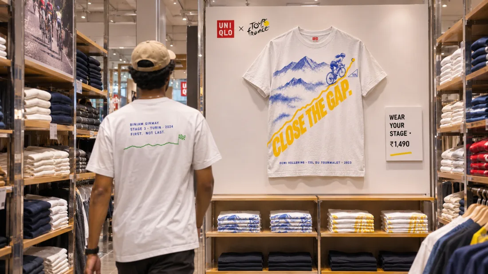
the brief: a brand collab ↗
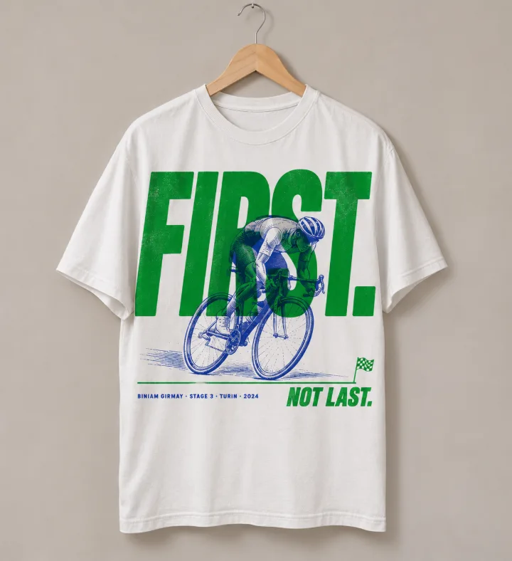
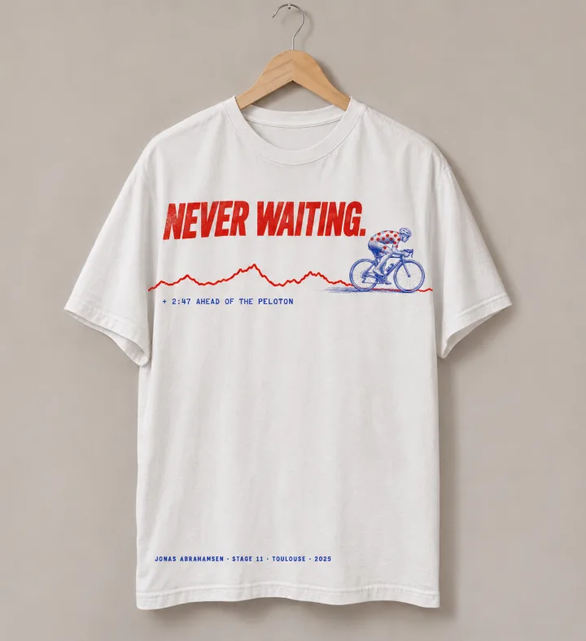
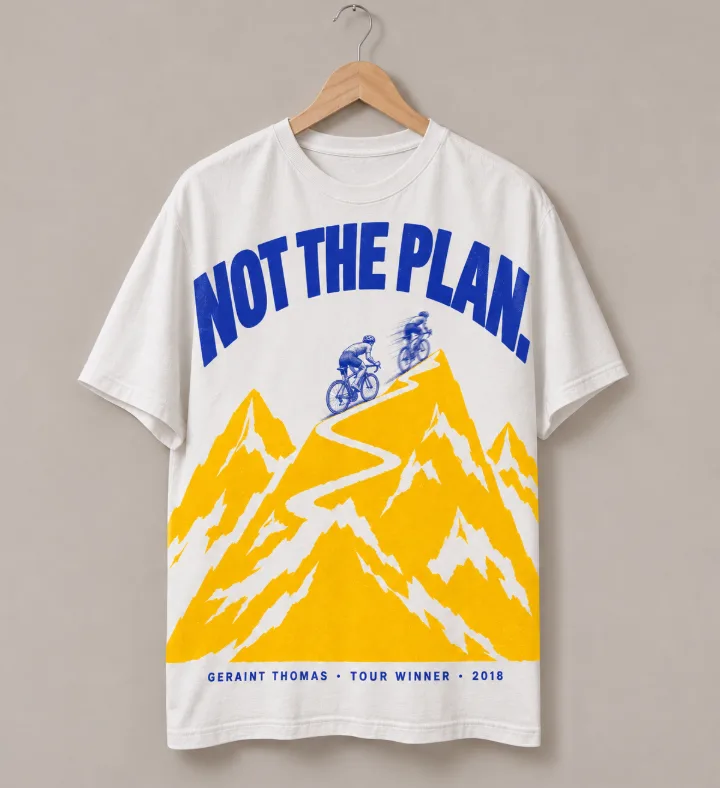
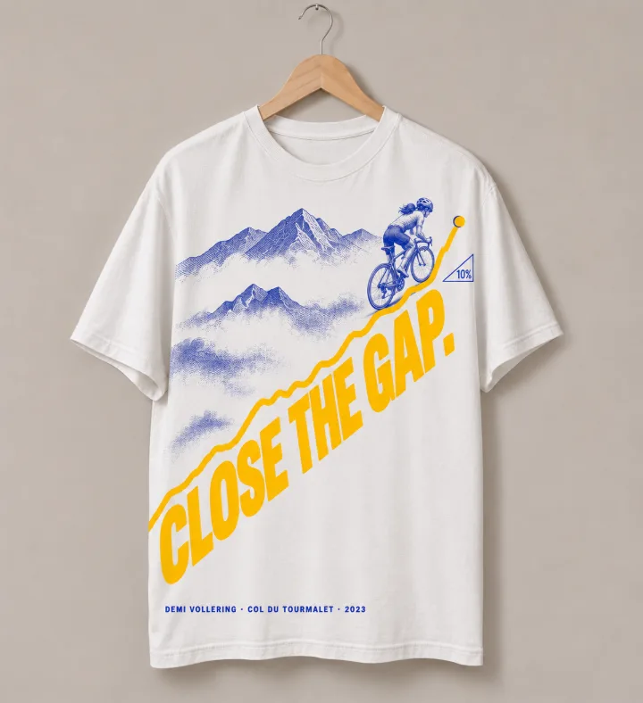
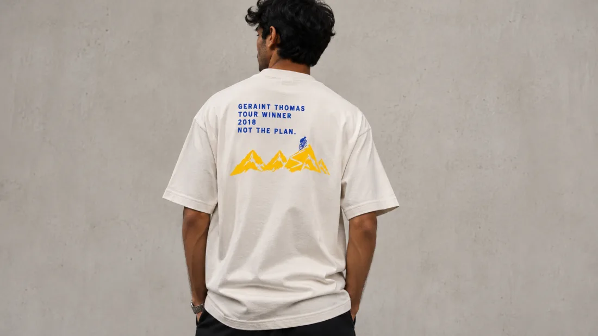
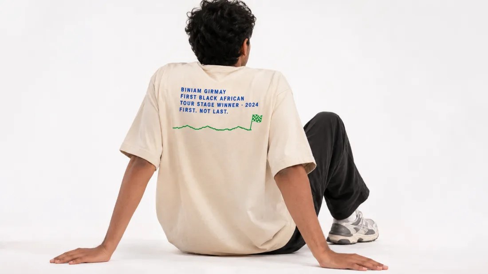
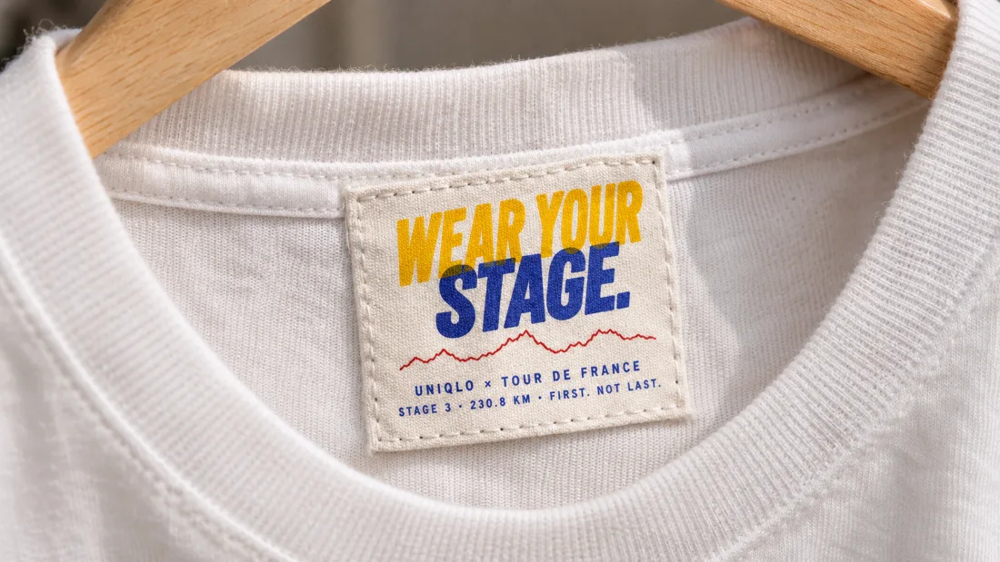
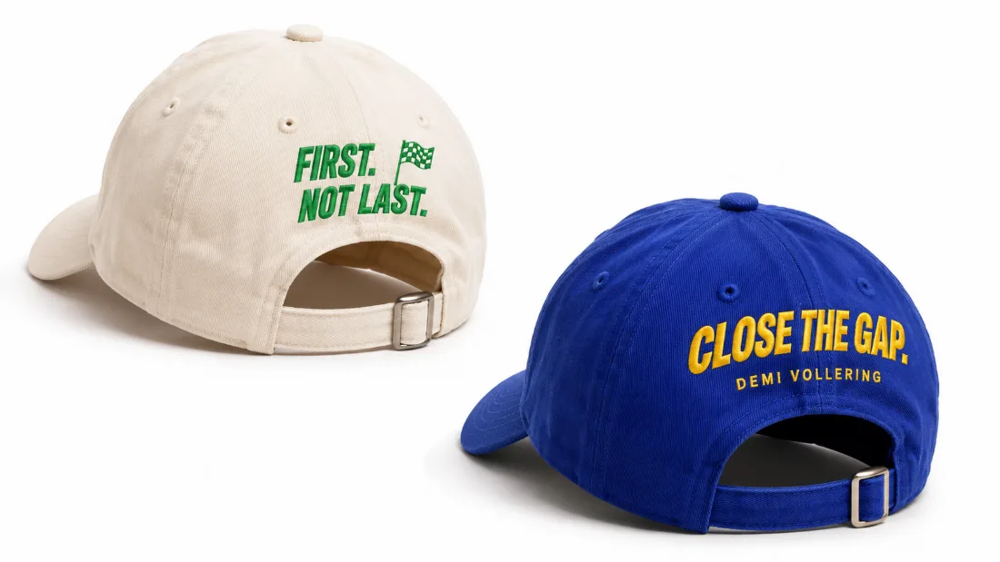
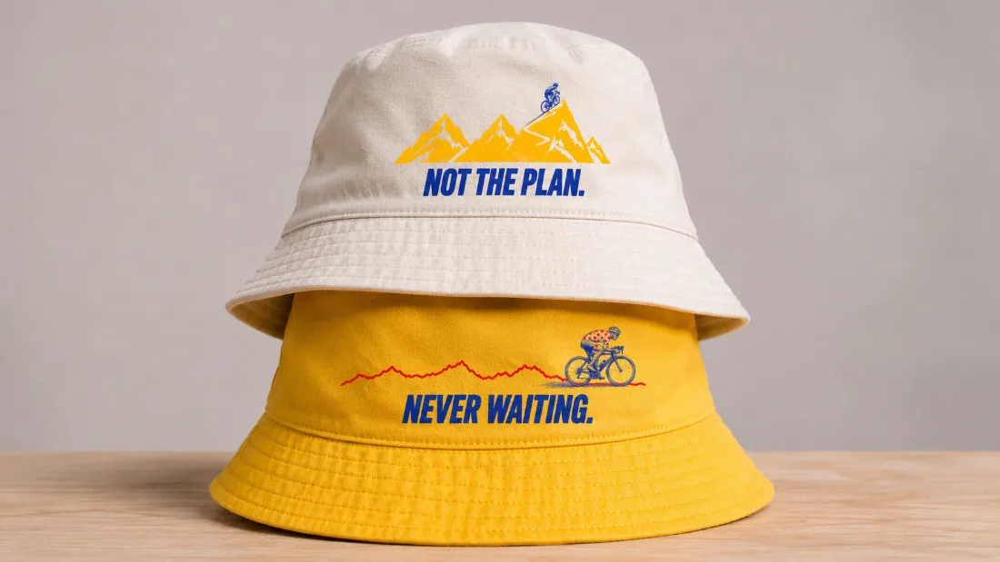
“You don't wear the team. You wear the moment.”
Project 05 · Packaging
Oak & Awe
An Armenian brandy for the generation that wasn't supposed to drink it.
For
Under-30s
Discipline
Packaging
Origin
Armenia
What went in
- Armenian folk patterns
- Deep burgundy & gold
- Bold symmetry, one hand-assembled box
[01] The brief: we were each given a country and had to design an alcohol bottle for it. I got Armenia.
[02] Go deep into Armenian geometric folk patterns, the kind on carpets and church walls, and build the brand from that visual language.
Know what you're fixing.
Brandy sits on your dad's shelf and comes out at funerals.
Nobody under 30 thinks it's for them. It's serious in a way that feels uninviting.
Build with burgundy, gold and symmetry. Assemble by hand into a real prototype.
Designer's note
“The goal wasn't to make brandy look young. It was to make it look worth keeping.”
Still on the desk
- Zine Sketching
- Drop the Label In progress
- Kiss Her, You Fool Drafting
- Ganatra Foods In progress
Coming in the next edition.
14Other
15Say hi.
The desk is open for new briefs.
Step 1
Copy my email
ganatrahemangi93@gmail.comStep 2
Send the brief
Packaging, a brand, an ad, or a strong opinion about a label.
Written & made by hand.
- Designer
- Hemangi Ganatra
- Studio
- Ecole Intuit Lab, Mumbai
- Edition
- Project 03 · Personal Branding & Portfolio
- Type
- Mynerve, Schoolbell & Space Mono
Notes
Thanks for making it to the end.
Still going for the wow, same.
Always.
— H.
18